Archaeopteryx.js Phylogenetic Tree Viewer¶
Overview¶
Archaeopteryx.js provides an interactive display of phylogenetic trees, with the ability to adjust many parameters of the display, download images in multiple formats, and search within the tree.
See also¶
Accessing Archaeopteryx.js¶
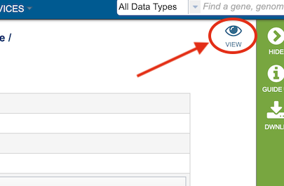
Clicking the “VIEW” icon at the top right of the result page of a Gene Tree Service analysis job result will open the Archaeopteryx display.
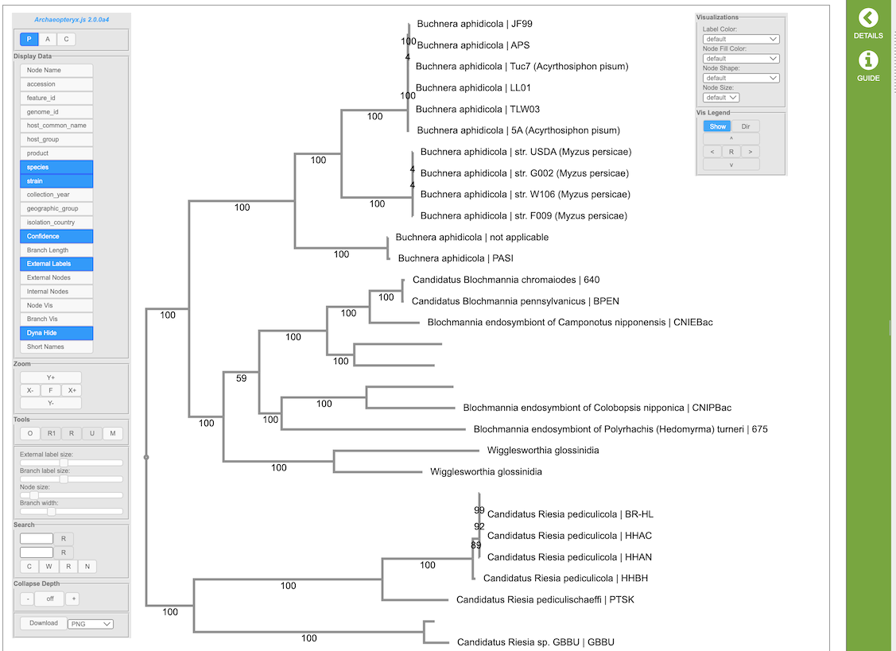
Archaeopteryx provides an interactive graphical representation of phylogenetic trees control panels on the left and right side of the tree display. The controls are described below.
Controls¶
The following describes the standard controls (found in the left control box). Depending on the tree displayed, some buttons might not be present. For example, if the tree being shown lacks confidence values (“bootstrap values”), the button to show confidence values does not appear.
Tree Display Types¶
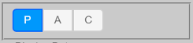
P for phylogram display (uses branch length values)
A for phylogram display (uses branch length values) with left-aligned labels
C for cladogram display (ignores branch length values)
Alternatively, use Alt+P (“Option” on Macintosh) to cycle between these display types.
Display Data¶
These settings control which data is being shown. In general, only relevant buttons are shown (for example, for a tree which has no internal labels, the “Internal Labels” button is not shown). Depending on the tree being displayed additional buttons might also be present.
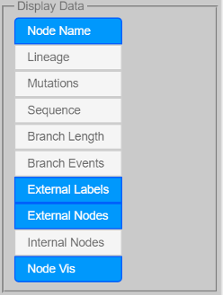
Node Name to show/hide node names (node names usually are the untyped labels found in, for example, New Hampshire/Newick formatted trees)
Taxonomy to show/hide node taxonomic information
Sequence to show/hide node sequence information
Confidence to show/hide confidence values
Branch Length to show/hide branch length values
Node Events to show speciations and duplications as colored nodes (e.g. speciations green duplications red)
Branch Events to show/hide branch events (e.g. mutations)
External Labels to show/hide external node labels (e.g. node labels, sequence and taxonomic information – if present)
Internal Labels to show/hide internal node labels
External Nodes to show external nodes as shapes (usually circles)
Internal Nodes to show internal nodes as shapes (usually circles)
Node Vis to show/hide node visualizations (node colors, shapes, sizes)
Dyna Hide to hide labels depending on expected visibility
Short Names to shorten long node labels
Zoom¶
These settings control zoom in horizontal and vertical directions. General zoom (where everything changes size) can also be achieved with the mouse-wheel.
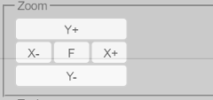
Y+ to zoom in vertically (Alt+Up or Shift+mousewheel)
Y- to zoom out vertically (Alt+Down or Shift+mousewheel)
X+ to zoom in horizontally (Alt+Right or Shift+Alt+mousewheel)
X- to zoom out horizontally (Alt+Left or Shift+Alt+mousewheel)
F to fit the tree to the display size (Alt+C, Alt+Delete, Home, or Esc to re-position controls as well)
Alt+plus and Alt+minus to zoom while keeping all font sizes constant
Shift+Alt+plus and Shift+Alt+minus or Page Up and Page Down or Shift+Ctrl+mousewheel to change all font sizes
Tools¶
These settings control the tree being displayed.
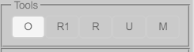
O to “order” the entire tree (Alt+O)
R1 to return to super-tree, one branch at the time, if in sub-tree (Alt+R)
R to return to complete tree, if in sub-tree
U to uncollapse all, if collapse sub-trees present (Alt+U)
M to midpoint re-root the tree, if tree is re-rootable (uncollapses as well) (Alt+M)
Node Actions¶
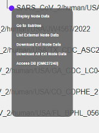
(Left-) clicking on nodes allows to (not all actions are available at all times):
Display Node Data
Collapse
Uncollapse
Uncollapse All
Go to Subtree
Return to Supertree
Swap Descendants
Order Subtree
Reroot
Select/Deselect Node
Select/Deselect All Ext Nodes
List External Node Data
Download Ext Node Data (to download data from external nodes which is currently displayed)
Download All Ext Node Data (to download all data from external nodes)
List Sequences in Fasta
Delete Subtree/External Node
Size Control¶
These sliders control the size of various elements.
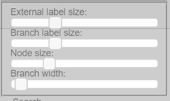
External label size to control the size of the external label fonts
Internal label size to control the size of the internal label fonts
Branch label size to control the size of the fonts for confidence and branch lengths
Node size to control the size of the external and internal node shapes (if turned on with “External Nodes” and “Internal Nodes”)
Branch width to control the branch widths (if not set in the tree itself)
Collapse¶
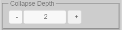
Collapse Depth
Collapse Feature to collapse nodes based on shared metadata values
Download¶
The following formats are available for download.
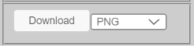
PNG image
SVG vector image
phyloXML tree file
Newick tree file
Visualizations¶
Example: Node fill color representing PANGO lineages:
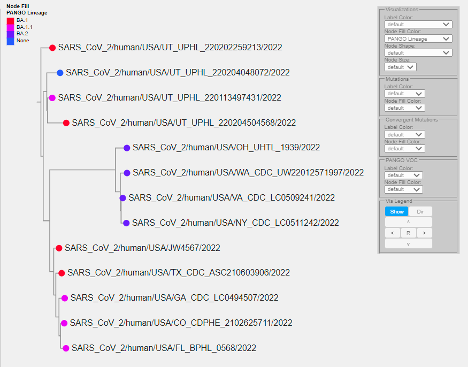
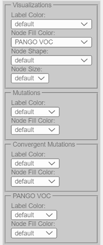
The following visualizations are possible (depending on the data present):
Label Color to control label colors based on a selected metadata field
Node Fill Color to control node colors based on a selected metadata field
Node Border Color to control node border colors based on a selected metadata field
Node Shape to control node shapes based on a selected metadata field
Node Size to adjust node sizes based on the numerical values of a selected metadata field
Vis Legend¶
Show to show/hide legends
Dir to toggle between vertical and horizontal alignment of multiple legends
Arrows to move the position of legends
R to return legends to the default position
Search¶
Archaeopteryx.js provides a wide variety of powerful search functions.
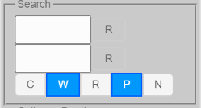
Search Fields¶
By default, all available data fields (such as sequence names, gene names, taxonomic names, etc.) are searched.
Basic Search¶
Search terms can be entered into the two input boxes. Matches of the search term entered in the top box are highlighted in green, while matches of the search term entered in the bottom box are in red. Matches of both search terms are in blue.
“R” buttons are used to reset (clear) search results. In addition, the “R” buttons change color if the corresponding search succeeds (one or more matches). The tooltip of the “R” buttons can be used to obtain the exact number of matches.
If Archaeopteryx.js is set up to load with preset initial search terms, pressing the Escape (Esc) key will restore these terms.
Search Modes¶
Search mode options are as follows:
C - to search in a case-sensitive manner
W - to match complete words (separated by spaces) only (does not apply to regular expression search)
R - to search with regular expressions
P - to search (hidden) properties associated with nodes
N - to negate (invert) the search results
Logical AND/OR Search¶
A comma is for logical OR search and a plus sign is used for logical AND search. AND has precedence (is evaluated first) over OR.
Examples:
“human + pre-mRNA” only matches nodes with both “human” and “pre-mRNA” in their name/annotation(s)
“human, mouse” matches all nodes with “human” or “mouse” in their name/annotation(s)
“human + bcl-2, caeel + ced-9” matches all nodes with “human” and “bcl-2” or “caeel” and “ced-9” in their name/annotation(s)
Field-specific Search¶
To limit queries to specific data fields, the following prefixes can be used (given that the displayed tree has typed data elements, provided by, for example, phyloXML formatted trees):
NN: node names
TC: taxonomy codes (e.g. “CAEEL”)
TS: taxonomy scientific names
TN: taxonomy common name
TI: taxonomy (database) identifiers
SY: taxonomy synonym
SN: sequence names
GN: gene names
SS: sequence symbols
SA: sequence accessions
AN: sequence annotations
XR: sequence cross references
MS: molecular sequences
Field-specific searches can be combined with logical AND/OR.
Examples:
“SN:Bcl-2” matches all nodes with a sequence name containing Bcl-2
“TC:CAEEL” matches all nodes for which the taxonomy code is “CAEEL”
“SN:ced-9 + TC:CAEEL” matches all nodes with a ced-9 sequence from C. elegans
“TC:CAEEL , TC:DROME” matches all nodes from C. elegans or Drosophila melanogaster
“XR:NMR” matches all nodes with a NMR structure cross reference (for sequences from UniProt, for example)
“XR:X-ray” matches all nodes with a X-ray structure cross reference (for sequences from UniProt, for example)
“XR:X-ray + TC:MOUSE” matches all nodes from mouse with a X-ray structure cross reference
“MS:GPIRQIR” matches all nodes with a protein sequence containing “GPIRQIR”
Regular Expression Search¶
Regular expression search can be enabled with the R button in the Search panel. Archaeopteryx.js follows the regular expression syntax of the JavaScript language, which in turn is very similar to widely known syntax used in Perl 5.
When using regular expressions:
“+” and “,” assume their normal use in regular expressions and cannot be used to indicate logical AND/OR searches
Case-matching (“C” button) applies (i.e., when “Cas” is turned off [A-Z] and [a-z] are the same)
“W” does not apply
Regular Expression Search Examples:
\d_C – matches everything which contains a digit followed by an underscore followed by the letter C (“Cas” turned on)
^A – matches everything which starts with a letter A (“Cas” turned on)
^B[a-z]{5,}\d{2,}$ – matches everything starting with a B and ending with at least two digits, separated by at least 5 lowercase characters (“Cas” turned on)
^C.\s – matches everything starting with “C.” followed by at least one white-space character (“Cas” turned on)
Regular expression can be used for typed searches.
Typed Regular Expression Search Examples:
SN:Bcl-?2 – to search for nodes with sequences named “Bcl2” or “Bcl-2”
MS:GP.R..R – to search molecular sequences for a motif or pattern
MS:E{5,} – to search for molecular sequences with Glutamic acid repeats of at least length 5